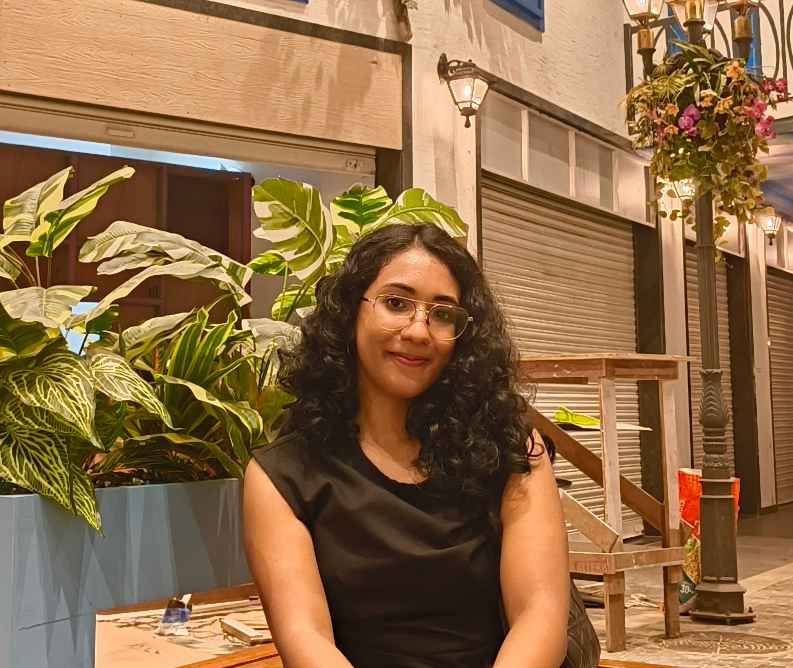

Hi! I’m Pavithra 🌱
I explore how AI can help people think critically, communicate clearly, and make better decisions.
Currently, I work as a researcher at TCS Research, where I am advised by Preethu Rose Anish.
I graduated from Amrita University in 2024 with a B.Tech in Computer Science (AI specialization). During my time at university, I was actively involved in student life and mentoring, including roles at our university’s FOSS and computer science club, amFOSS, and as Google Developer Student Club lead.
Here’s what I’ve been pondering lately:
- 🌱 How can AI systems, particularly conversational AI, support learners in reasoning through complex problems rather than just giving answers?
- 🌱 How can AI help learners interpret, clarify, and communicate ideas more effectively when engaging with complex or ambiguous content?
- 🌱 What kinds of AI tools and interactions can enhance learning experiences and decision-making, making educational technology more engaging and supportive?
I’m actively seeking Ph.D. positions starting in Fall 2026 in the areas of AI for Education, Human-AI Interaction, and NLP.